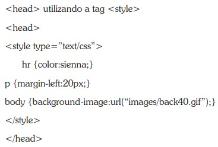

O estilo EXTERNO é ideal quando a formatação deve ser aplicado a várias páginas.
Com um ARQUIVO EXTERNO você pode alterar um formato e ele será automaticamente em todo o projeto.
O estilo INTERNO é usado na própria página de html. O estilo é definido na seção
O estilo INLINE é usado diretamento no elemento HTML
Esse é um exemplo de parágrafo de estilo INLINE
Opção 1 Opção 2 Opção 3 Opção 4 Opção 5 Opção 6